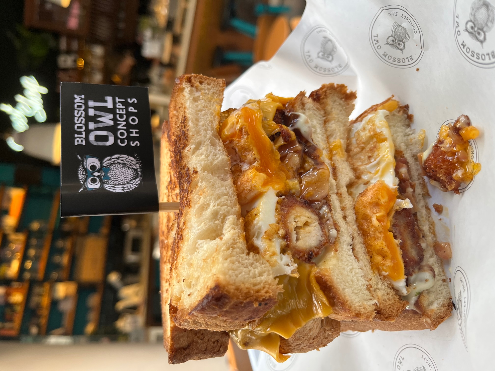
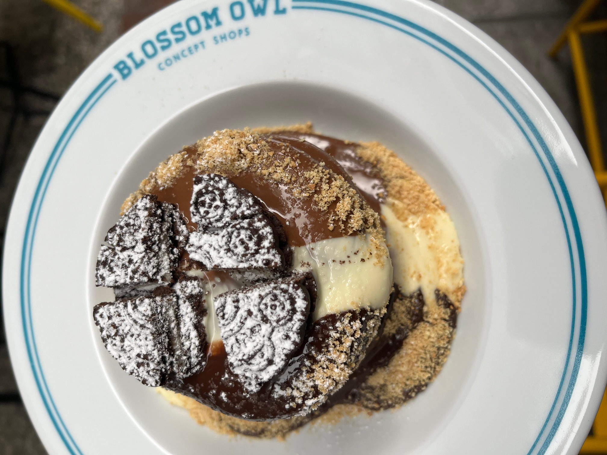

Οδοιπορικό στην Καλαμάτα και φυσικά κάναμε στάση για brunch για να μαζέψουμε δυνάμεις.
Η αλήθεια είναι πως δεν περιμέναμε να δοκιμάσουμε ένα τόσο ωραίο πρωινό στην Καλαμάτα και αυτό σίγουρα μας εξέπληξε

Ατμόσφαιρα:
Το blossom owl είναι ένα όμορφο καφέ στην Καλαμάτα με τραπεζάκια πάνω στον πεζόδρομο δημιουργώντας το πιο λαχταριστό πέρασμα στην πόλη.
Το μαγαζί είναι «χωρισμένο» στη μέση καθώς το μαγαζί εξυπηρετεί και από τις δύο πλευρές του πεζοδρόμου κάνωντας τις μύτες μασ να τρελαίνονται σε όλο το τετράγωνο.
Στα αρνητικά υτού είναι πως σε μέρες που υπάρχει αρκετός κόσμος ίσως σε κάποια σημεία να είαι αύλο το να κάτσεις λόγω του κόσμου που περνάει ή να πρέπει να κοιτάς συνεχώς τα πράγματα σου για να νιώθεις ασφάλεια.
Εξυπηρέτηση:
Παρά τον μεγάλο φόρτο εργασίας όλα τα παιδιά στο προσωπικό ήταν πολύ ευγενικά και εξυπηρετικά.
Μας βοήθησαν αρκετά με τις επιλογές μας και ήταν αρκετά γρήγοροι με τις παραγγελίες μας. Ξαναλέμε αυτό πάει και με βάση την επισκεψιμότητα που έχει το μαγαζί την συγκεκριμένη ώρα.
Φαγητό:
Συνολικά για το φαγητό θα λέγαμε ότι είναι μη αναμενόμενο.
Ναι ναι ξέρουμε είναι απλά ένα ακόμα brunch όπως τόσα και τόσα που βλέπουμε τα τελευταία χρόνια αλλά αυτό το μαγαζί σε κάθετι έχει βάλει την πινελιά του δημιουργόντας εμπνευσμένους συνδιασμούς.
Ας αρχίσουμε απ τα βασικά με ένα διαφορετικό avocado toast. Σε αυτό το μαγαζί κάθε πιάτο έχει και μια έκπληξη.
Προχωράμε με έναν απροσδόκητα καλό συνδυασμό με πανκεικς πανέ κοτόπουλο scrambled eggs και σιρόπι σφενδάμου ή αλλιώς scrambled chicken waffle.
Γευστικότατο αν και για να πούμε την αλήθεια το κοτόπουλο θα το θέλαμε λιγάκι πιο ζουμερό.
Είναι αρκετά καλός συνδυασμός αν γευτείς μια μπουκιά που περιέχει λίγο απ όλα ωστόσο αν τα δοκιμάσεις μεμονωμένα το πιάτο χάνει λίγο τη δημιουργικότητα του.
Και θα περάςουμε κατευθείαν στα σάντουιτς στα οποία το μαγαζί έχει αφιερώσει έναν ολόκληρο κατάλογο και όχι άδικα. Με διαφορά το δυνατό σημείο του μαγαζιού. Απίστευτα ζουμερά και ισορροπημένα στη γεύση
Top επιλογή το sando lavalova ο,τι πιο ζουμερό και χορταστικό δοκιμάσαμε στο μαγαζί.
Fast forward στα γλυκά και αν είσαι λάτρης της σοκολάτας προτείνουμε τα πανκεικς με την τριπλή σοκολάτα αν και εδώ που τα λέμε δεν το λες και….πύργο.
Αν είσαι δυνατός παίκτης και για ένα άτομο είναι μια χαρά. Αν πάλι δεν είσαι της σοκολάτας μην ανησυχείς το μαγαζί έχεις παρά πολλές επιλογές που θα σε ανταμείψουν.

Τελικές σκέψεις:
Ωραίος καφές, ευχάριστο περιβάλλον, εξυπηρετικό προσωπικό.
Side-notes
Ακριβώς δίπλα από το μαγαζί υπάρχει και κατάστημα όπου μπορείς να αγοράσεις τις λιχουδιές που σου αρέσουν για το σπίτι ή για το δρόμο της επιστροφής.

Αν θέλεις να δείς περισσότερο υλικό για το Blossom Owl, ρώτησε μας
ή δες εδώ!